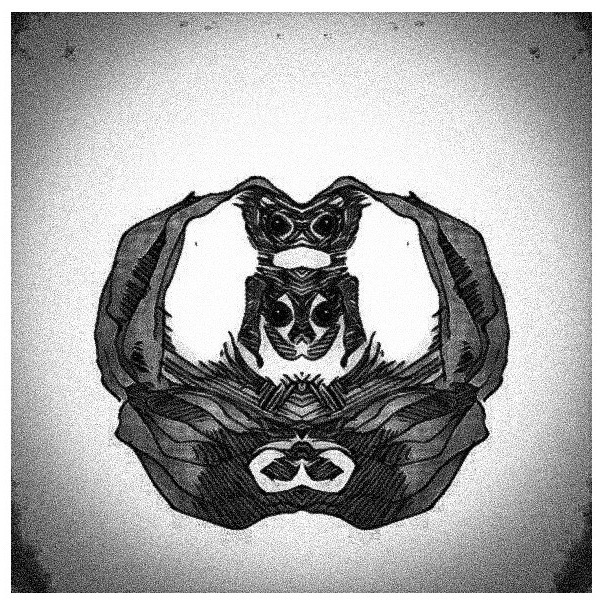

Research
My research trajectory speaks to a persistent interest in the politics of form. In addition to media, sensory, and linguistic anthropology, I build on a range of theoretical traditions, including semiotics, phenomenology, continental aesthetic theory, critical theories of race and gender, queer theory, and STS.
Significant projects include: Unsettling Forms / Slippery Figures; Syn(aes)thetic Memory; Reconciliatory Poetics; and Parasites and Post-Truth Climate.
Unsettling Forms / Slippery Figures
This project comprised two years of ethnographic fieldwork with independent (auteur) animation filmmakers in Berlin. By attending closely to artists' practices and artworks, I explore how they use animation's formal plasticity to evoke violent histories and contemporary realities that seldom figure in official narratives of immigration and integration. Publications include the Gumperz Prize-winning "Alienable gesture" (JLA 2025) and "Un-sitely mediations" (Semiotic Review 2024); a book manuscript is in progress.
Syn(aes)thetic Memory
This ongoing project examines how artists and activists in Germany are using digital media, including AI, VR, and XR, to reanimate memories of displacement in the context of Germany's highly institutionalized yet increasingly fraught memory culture.
Reconciliatory Poetics
This project examines popular music-critical representations of Tanya Tagaq, an Inuit Canadian musician. In the article, "All there is: The reconciliatory poetics of a singing voice" (American Anthropologist 2018), I argue that such representations shore up a reconciliatory project by mobilizing voice ideologies within densely poetic texts. By analyzing how discourse on cultural production figures reconciliation at various scales, this research contributes to critical understandings of liberal multicultural politics of reconciliation and offers insight into an entanglement of voice, language, and media ideologies in popular journalistic discourse on cultural difference.
Parasites and Post-Truth Climate
This project investigates the semiotics of institutionalized climate-change skepticism. Findings were published in the article, "Parasites and post-truth climate" (JLA 2019), which argues that such actors attain persuasive power by striking up a parasitic relation to reputable climate science organizations and associated discourse genres. Drawing on theories of citationality and genre, it construes parasitism as an asymmetric structure of relation that recurs across various sites and scales — one in which corporate climate change skeptics imitate and incorporate host institutions in order to mine scientific authority while generating noise within established channels of scientific communication.